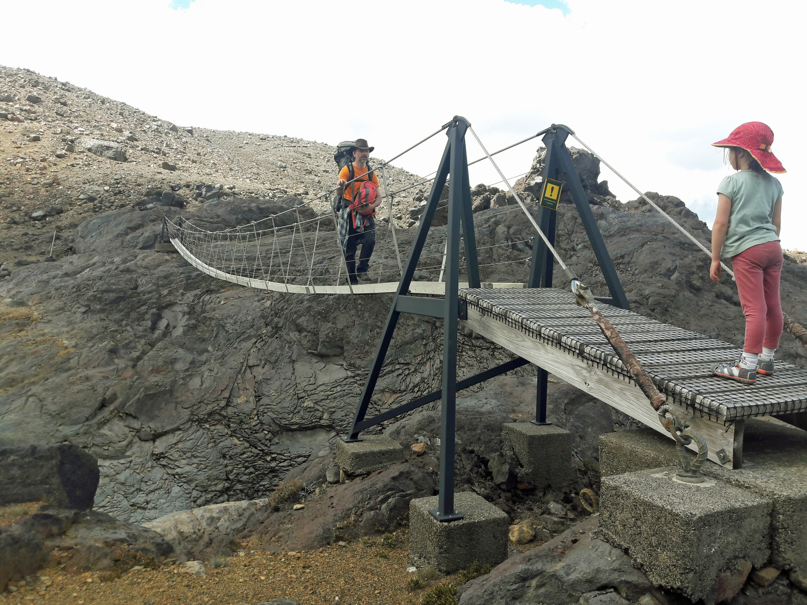
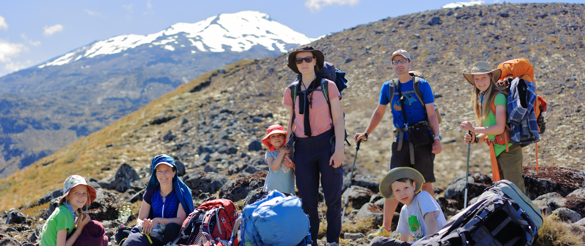

We met up with Pakburgs in Turangi and embarked on our 8-day tramp around Mounts Ngauruhoe and Ruapehu, two active volcanos in the Tongariro National Park. We started two days before Christmas Day. Over 80km of walking ahead of us, stream crossings, and despite not climbing any mountains, lots of ups and downs.
Day 1 - Whakapapa Village to Mangatepōpō Hut
Meg's plan for the tramp called for a strategic placement of their car with the food supplies on the other side of the park, so that we could pick up food on Day 3 of the tramp. This way, we didn't have to carry it all over the Tongariro Crossing (which was waiting for us on day 2 of the tramp). So, that first day Meg and Kasia walked with the kids, while Jacek and Lechu took care of the driving, and were later to catch up with everyone in the hut.
The day was overcast and we even got few minutes of solid rain. Little did we know, that was the worst of the weather we were to have on this tramp. At the moment though, kids had to don the rain gear.

With overcast sky and limited visibility, there weren't many opportunities for photos. The trek was pretty straight forward and not too taxing. By depositing their heavy bags in the parking lot nearby the hut, the guys were able to walk briskly and catch up with the group at the hut only 20min after they got there, despite close to 2 hours delayed start.
At the hut we played Azul and chess. Finn and Julian did some carving outside, Iza and Summer played Uno.


Day 2 - Mangatepōpō Hut to Oturere Hut
It was still overcast a bit, and not too warm in the morning, so we bundled up.


Kids managed to find some time to play before we set off.

Tongariro crossing is a famous tramp that can be done as a day hike. And so, we got passed by many walkers, but of course, they didn't have to carry the heavy backpacks. The day started with a traverses through jagged old lava fields.

From time to time, Ngauruhoe peaked from behind the clouds.

The ground raised slowly...


...until we eventually made it to South Crater at the base of Ngauruhoe.

From the South Crater we had to climb a bit up to get to the rim of the Red Crater. Finn led the way with Iza following right after (refusing to stop for rest). In the second photo below, you can see us walking down from the rim towards Emerald Lakes - Iza is still shadowing Finn.


At this point we were possibly a bit over the half of our journey towards the hut. The sun decided to come out...and the Emerald Lakes glistened beautifully below.
We lunched at the lake.

We kept trekking down towards the desolate old lava plain leading us towards Oturere Hut.

The last 4.2km was relatively flat.

Oturere Hut turned out to be small and cozy and packed to the brim with trampers overnighting at the hut as well as those tenting nearby.
Kids played Saboteur and then tag over the craggy boulders from the old lava flows. Kasia made the first of the many puddings that were to become the dessert highlight of entire tramp. It required whipping (achieved by shaking in Kasia's water bottle) and cooling (achieved by submerging the bottle in the nearby stream). Here's Kasia cooling the pudding (you can see the belt that was used to suspend the bottle in the water).

The vistas from Oturere Hut were amazing. We experience the first of the many amazing sunsets we were to enjoy on this tramp.
Day 3 - Oturere Hut to Waihohonu Hut
Christmas Day - and Santa must have visited overnight, because in the morning kids found presents on the table in the hut. After some play, it was time to brush up, and get ready for the day of walking.


Is there anything better, than the prospect of tramping (with these heavy packs) on Christmas Day, in beautiful weather wearing a Santa hat?
Santa's present included little Lego dudes. Kids wanted a photo with the dudes before setting off - Mount Ruapehu is in the background.

OK, time to put Lego dudes away.

Oturere Hut has amazing views towards Mount Ngauruhoe (close by) and Mount Ruapehu (far away).
Ahead of us a trek around the east side of Ngauruhoe towards Mount Ruapehu.
Late morning, time for some strategic planning. Jacek and Lechu need to walk extra 12km from Waihohonu hut to Pakburg's car (left there on day 1), carrying out the rubbish, and brining in the rest of the food for the remaining 5 days of the tramp. The decision is made - Lechu and Jacek will go quickly ahead, reach the hut and do the side trip as quickly as possible.
The rest, can relax a bit...
...but not for too long - the hut will not come to us.

Waihohonu Hut is nicknamed "The Palace"...and indeed - it's the biggest Hut we have seen...ever, in the entirety of our tramps. Before dinner we enjoy a snack of crisps.

Then games - times for a chess rematch between Finn and Lechu.

Day 4 - Waihohonu Hut to Rangipo Hut
Having completed the three days of the four day Tongariro Norther Circuit Great Walk around Mount Ngauruhoe, instead of walking back between the two volcanos to Whakapapa Village, we step on the Around the Mountain Circuit. We are now walking towards Mount Ruapehu...
...and away from Mount Ngauruhoe.

It's a long walk today. Mount Ngauruhoe, slowly but surely, keeps getting smaller in the distance.
The landscape is a desert of very old, completely weathered down, lava-flows. Apparently, technically it's not a desert, since it gets slightly more rain that the official desert definition allows...but it's a desert in every other way.

Julian's Lego dude is in high spirits...

...and so is Julian, despite a heavy (carrying 5 days worth of future dinners) backpack.

We cross gorges and traverse narrow passages.


We get to the hut after 7.5hrs of walking. It's been a long day. The huts on the "Around the Mountain Circuit" are not bookable, and it is first come first serve. Luckily, we get 8 bunks. The hut itself is very nice, with a beautiful deck facing east. Jacek and Iza share a moment on the deck while brushing teeth.

Day 5 - Rangipo Hut to Mangaehuehu Hut
The sunrise in Rangipo hut is georgeus. Even the Lego dude appreciates it.

Breakfast is ready. It's oatmeal again. Julian sits by the table with the bowls laid out. Iza slept in a bit, so she needs to put on some clothes first.


We all eat breakfast on the deck, basking in the sun.


Iza has an eventful morning. She finds time to enjoy the deck...

...then poses with her menagerie of "Henieks" that she brought along on the tramp (that's right, she drew them beforehand and brought them with her in a little box)...


...and then has a go at a play with the slinky (that she got from Santa).

And then, it's another long day of walking on a hard terrain. We are rounding Mount Ruapehu from the east towards the south.
On the way, there is a massive gorge...which takes a long time (about an hour) to go down and up again. In the middle of it, there is a footbridge.

We get to the hut after 8 hours of walking. It's been a hard day. Lechu hits "the wall" and considers quitting (the next day involves some walking along a busy road...so hitching a ride to Whakapapa Village would be technically possible). After family emergency meeting, Szymanskis decision is to go on - kids want to continue.
Later, everyone (except for exhausted Lechu) enjoys a round of Saboteur. Iza loves playing Saboteur.

Day 6 - Mangaehuehu Hut to Mangaturuturu Hut
Another amazingly beautiful day and we get an amazing view of Mount Ruapehu from the hut.

Not quitting is the right decision - the day will be just as long as the one before...but somehow it's not that bad. Maybe it's because the backpack is getting slowly lighter (as we go through our food)

Time to part our ways. Pakburgs are attempting a DOC-unsanctioned path via Blythe Hut that avoids the road. Szymanskis decided to go along the road (secretly hoping to maybe catch a ride)

The road is a hard slog in a searing midday heat, 3km slightly uphill - very much not enjoyable on any level. Julian takes a dip in a stream (just off the road) to cool off.

A Scottish tourist couple gives us a ride - the four of us (Kasia, Lechu, Julian and Iza) and all our backpacks somehow fit into a little Suzuki Swift that is already completely packed to the brim in the boot. And the ride...is only about 400m. We didn't know we were so close to the point where the track steps off the road. But we make it there before Pakburgs...just. They are only about 10min behind us and catch up soon enough.
From the road, the path towards the hut leads mostly down, tracking a long, non-vertical waterfall.

A bit of scrambling and we're down, only 30min walking time to the hut.

The hut is almost full. We manage to secure 5 mattresses, which we lay out on the floor. Jacek and Lechu will sleep below the sink on the floor, but after that day, sleep is still sweet and restful.
Day 7 - Mangaturuturu Hut to Whakapapaiti Hut
We've been warned (by other trampers) that this will be our hardest day - a lot of up and down. Kids find time to play before we set off.
The track is beautiful, very different to the desert-like conditions we experienced on days 4 and 5. We stop early on by a waterfall.

As we walk around the mountain, we get different views of Mount Ruapehu.

The day is very long. Szymanskis run out of water (lesson for the future, need to take two bottles per person). But we make it to the hut. Everyone is exhausted, but Jacek (foolishly) promised earlier to give kids a watercolour painting lesson. And so, tired or not, he sits with Iza, Julek and Summer, teaching them how to paint. It ends up being one of the most amazing moments of the entire tramp.

After the paining lesson, it's teeth brushing time and off to bed.


Day 8 - Whakapapaiti Hut to Whakapapa Village
Last day - not super rushed, but not wanting to leave too late. Meg enjoys a tea after breakfast and goes over the intentions book. She's finished the book she was reading earlier on...so that's the only thing left to read.

The mood is a bit melancholic. Are we happy that we won't have to walk 8 hours today, or sad that the tramp is ending?

Lechu manages to fall into the river while crossing over some slippery boulders with Iza. Soon after, we enter the forest. While drying his socks, Lechu takes a photo of the biggies enjoying a short rest.


We come out of the forest...and we can see Ngauruhoe again. We have rounded Ruapehu.
And then we're back in Whakapapa Village - Lechu and Julian bring up the rear.

Nothing else to do today, but enjoy ourselves and relax at the Skotel (which is short for a Ski Hotel).
Track info
The Tongariro Northern and Around the Mountain circuits are two separate tramps, that trace a figure eight pattern around the two volcanos in the Tongariro Park. We have traced a big zero around both mountains, skipping the 15km (that is relatively boring according to Jacek) part between the mountains.
The first 3 huts of our tramp, being part of a Great Walk, were booked in advance, and were packed to the brim. The last 4 are part of a less popular tramp with non-bookable huts. Carrying a tent is advised...but we just couldn't take any more weight...so we chanced it, and it worked out fine (only had to sleep on the floor of the Mangaturuturu Hut).
Days 5 through to (and including) day 7 were around 8 hours of walking. That was quite hard. Still, it is a beautiful tramp, and the vistas of the two volcanos from various directions (thanks to the beautiful weather we had) were very much worth the effort.